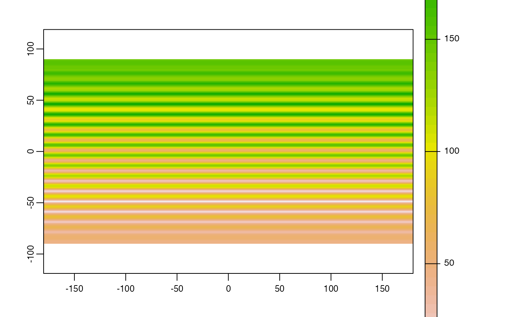

distance.RdIf x is a SpatRaster:
If y is missing this method computes the distance, for all cells that are NA in SpatRaster x to the nearest cell that is not NA (or other values, see arguments "target" and "exclude".
If y is a numeric value, the cells with that value are ignored. That is, distance to or from these cells is not computed (only if grid=FALSE).
If y is a SpatVector, the distance to that SpatVector is computed for all cells. For lines and polygons this is done after rasterization; and only the overlapping areas of the vector and raster are considered (for now).
The distance is always expressed in meter if the coordinate reference system is longitude/latitude, and in map units otherwise. Map units are typically meter, but inspect crs(x) if in doubt.
Results are more precise, sometimes much more precise, when using longitude/latitude rather than a planar coordinate reference system, as these distort distance.
If x is a SpatVector:
If y is missing, a distance matrix between all object in x is computed. An distance matrix object of class "dist" is returned.
If y is a SpatVector the geographic distance between all objects is computed (and a matrix is returned). If both sets have the same number of points, and pairwise=TRUE, the distance between each pair of objects is computed, and a vector is returned.
The distance is always expressed in meter, except when the coordinate reference system is longitude/latitude AND one of the SpatVector(s) consists of lines or polygons. In that case the distance is in degrees, and thus not very useful (this will be fixed soon). Otherwise, results are more precise, sometimes much more precise, when using longitude/latitude rather than a planar coordinate reference system, as these distort distance.
If x is a matrix:
x should consist of two columns, the first with "x" (or longitude) and the second with "y" coordinates (or latitude). If y is a also a matrix, the distance between each points in x and all points in y is computed, unless pairwise=TRUE
If y is missing, the distance between each points in x with all other points in x is computed, unless sequential=TRUE
# S4 method for SpatRaster,missing
distance(x, y, target=NA, exclude=NULL, unit="m", haversine=TRUE, filename="", ...)
# S4 method for SpatRaster,SpatVector
distance(x, y, unit="m", rasterize=FALSE, haversine=TRUE, filename="", ...)
# S4 method for SpatVector,ANY
distance(x, y, sequential=FALSE, pairs=FALSE, symmetrical=TRUE, unit="m")
# S4 method for SpatVector,SpatVector
distance(x, y, pairwise=FALSE, unit="m")
# S4 method for matrix,matrix
distance(x, y, lonlat, pairwise=FALSE)
# S4 method for matrix,missing
distance(x, y, lonlat, sequential=FALSE, pairs=FALSE, symmetrical=TRUE)SpatRaster, SpatVector, or two-column matrix with coordinates (x,y) or (lon,lat)
missing, numeric, SpatVector, or two-column matrix
numeric. The value of the cells for which distances to cells that are not NA should be computed
numeric. The value of the cells that should not be considered for computing distances
character. Can be either "m" or "km"
logical. Use the haversine formula for lon/lat data use the haversine formula? If FALSE, the more precise but slower method of Karney (2003) is used
logical. If TRUE distance is computed from the cells covered by the geometries after rasterization. This can be much faster in some cases
character. Output filename
additional arguments for writing files as in writeRaster
logical. If TRUE, the distance between sequential geometries is returned
logical. If TRUE and if x and y have the same size (number of rows), the pairwise distances are returned instead of the distances between all elements
logical. If TRUE the coordinates are interpreted as angular (longitude/latitude). If FALSE they are interpreted as planar
logical. If TRUE a "from", "to", "distance" matrix is returned
logical. If TRUE and pairs=TRUE, the distance between a pair is only included once. The distance between geometry 1 and 3 is included, but the (same) distance between 3 and 1 is not
SpatRaster or numeric or matrix or distance matrix (object of class "dist")
The distance unit is in meters.
A distance matrix can be coerced into a matrix with as.matrix
Karney, C.F.F., 2013. Algorithms for geodesics, J. Geodesy 87: 43-55. doi:10.1007/s00190-012-0578-z.
#lonlat
r <- rast(ncols=36, nrows=18, crs="+proj=longlat +datum=WGS84")
r[500] <- 1
d <- distance(r)
#>
|---------|---------|---------|---------|
=========================================
plot(d / 100000)

#planar
rr <- rast(ncols=36, nrows=18, crs="+proj=utm +zone=1 +datum=WGS84")
rr[500] <- 1
d <- distance(rr)
rr[3:10, 3:10] <- 99
e <- distance(rr, exclude=99)
p1 <- vect(rbind(c(0,0), c(90,30), c(-90,-30)), crs="+proj=longlat +datum=WGS84")
dp <- distance(r, p1)
#>
|---------|---------|---------|---------|
=========================================
d <- distance(p1)
d
#> 1 2
#> 2 10014577
#> 3 10014577 20003931
as.matrix(d)
#> 1 2 3
#> 1 0 10014577 10014577
#> 2 10014577 0 20003931
#> 3 10014577 20003931 0
p2 <- vect(rbind(c(30,-30), c(25,40), c(-9,-3)), crs="+proj=longlat +datum=WGS84")
dd <- distance(p1, p2)
dd
#> [,1] [,2] [,3]
#> [1,] 4596223 5104507 1054933
#> [2,] 9192445 5905838 11048088
#> [3,] 10825924 14117180 8981037
pd <- distance(p1, p2, pairwise=TRUE)
pd
#> [1] 4596223 5905838 8981037
pd == diag(dd)
#> [1] TRUE TRUE TRUE
# polygons, lines
crs <- "+proj=utm +zone=1"
p1 <- vect("POLYGON ((0 0, 8 0, 8 9, 0 9, 0 0))", crs=crs)
p2 <- vect("POLYGON ((5 6, 15 6, 15 15, 5 15, 5 6))", crs=crs)
p3 <- vect("POLYGON ((2 12, 3 12, 3 13, 2 13, 2 12))", crs=crs)
p <- rbind(p1, p2, p3)
L1 <- vect("LINESTRING(1 11, 4 6, 10 6)", crs=crs)
L2 <- vect("LINESTRING(8 14, 12 10)", crs=crs)
L3 <- vect("LINESTRING(1 8, 12 14)", crs=crs)
lns <- rbind(L1, L2, L3)
pts <- vect(cbind(c(7,10,10), c(3,5,6)), crs=crs)
distance(p1,p3)
#> [,1]
#> [1,] 3
distance(p)
#> 1 2
#> 2 0
#> 3 3 2
distance(p,pts)
#> [,1] [,2] [,3]
#> [1,] 0.000000 2.000000 2.000000
#> [2,] 3.000000 1.000000 0.000000
#> [3,] 9.848858 9.899495 9.219544
distance(p,lns)
#> [,1] [,2] [,3]
#> [1,] 0.000000 3.535534 0.000000
#> [2,] 0.000000 0.000000 0.000000
#> [3,] 1.414214 5.099020 2.553878
distance(pts,lns)
#> [,1] [,2] [,3]
#> [1,] 3 8.602325 7.262591
#> [2,] 1 5.385165 6.943356
#> [3,] 0 4.472136 6.065460